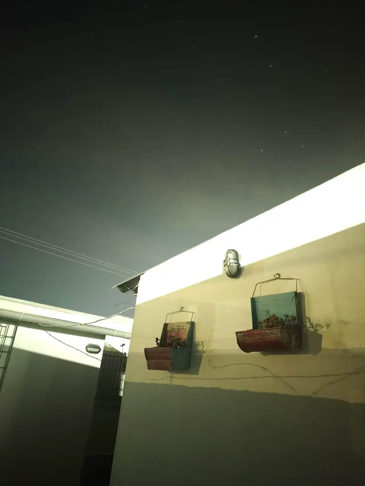
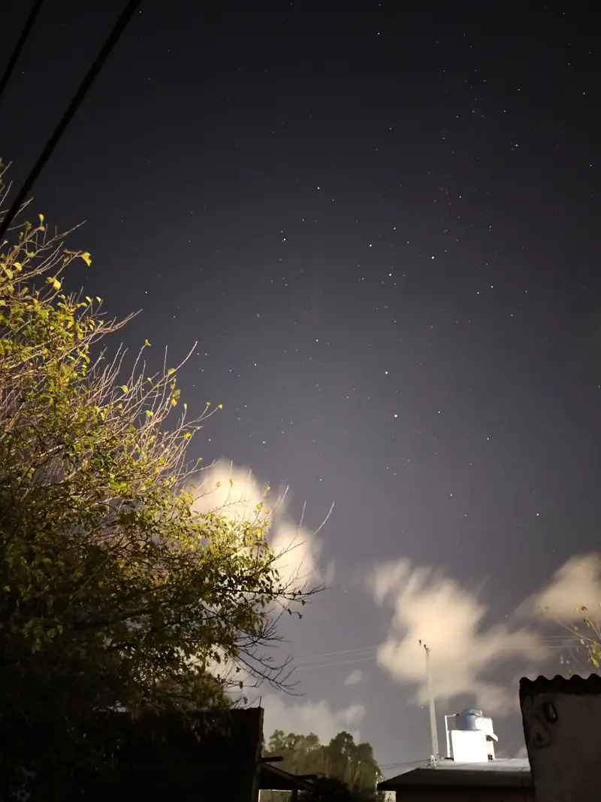
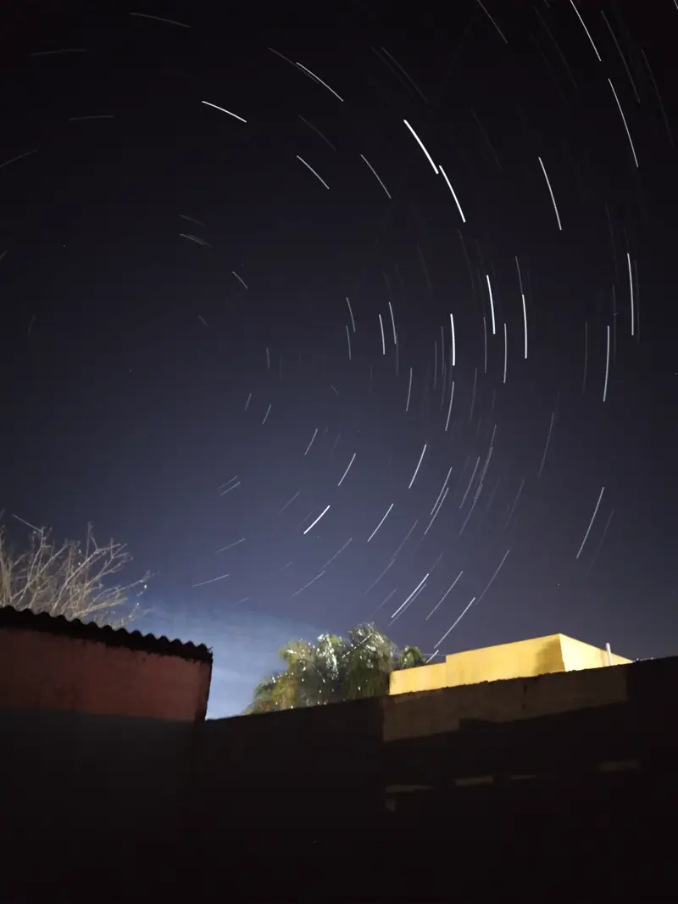
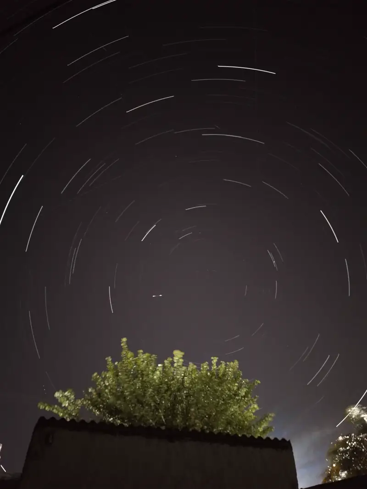

¡Captura el universo con el teléfono que llevas en el bolsillo!
Astrofotografía con celular: guía de iniciación
¿Sabías que no necesitas telescopios costosos de miles de dólares para fotografiar el cielo nocturno? Con la tecnología que ya tienes en casa (un smartphone común y un trípode sencillo) puedes retratar constelaciones, estrellas y hasta galaxias lejanas. ¡Aprende los secretos de la física de la luz y empieza a hacer astrofotografía!

La física de la foto nocturna
Atrapando fotones
Sensor
El sensor de tu celular tiene millones de "pocitos" llamados píxeles. En la oscuridad del espacio, necesitamos dejar el sensor expuesto más tiempo para capturar la débil luz (fotones) de las estrellas lejanas.
Referencia: "A Guide to Smartphone Astrophotography", NASA, pág. 16.
RAW frente a JPG
Formato
El formato JPG borra el 90% de la información de luz para ahorrar espacio. Capturar en RAW (DNG) mantiene los datos de luz intactos, permitiéndote "rescatar" estrellas invisibles al editar.
Referencia: "A Guide to Smartphone Astrophotography", NASA, pág. 41.
Estabilidad absoluta
Estabilidad
Para que las estrellas no salgan como trazos o "fideos", la cámara debe estar inmóvil. Usar un trípode (¡o apoyarlo en una piedra!) y el temporizador evita la vibración del dedo al disparar.
Referencia: "A Guide to Smartphone Astrophotography", NASA, pág. 52-62.
Imágenes para ponernos en acción
Estas fotos las tomamos nosotros, los autores del contenido de Uruguay Educa, con un celular de gama media. Así se ve lo que es posible retratar con paciencia y buen tiempo.
-

Cielo urbano. En 30 segundos el sensor juntó tanta luz de las casas vecinas que el cielo salió casi blanco. Siempre que puedas, aléjate de las luces. -

Estrellas entre nubes. Con el celular quieto sobre un apoyo aparecen estrellas débiles. Las nubes brillan porque reflejan la luz de la ciudad. -

Estelas sobre los techos. Con una exposición de varios minutos, cada estrella dibuja un arco alrededor del polo sur celeste. -

Una hora de estelas. Las rayitas que cruzan en otra dirección no son estrellas: son satélites o meteoros, lo que solemos llamar «estrellas fugaces».
Los 4 pasos clave de la astrofotografía
Sigue esta rutina para asegurar capturas exitosas.
Trípode y estabilidad
Consigue un trípode sencillo o crea un soporte casero con vasos de plástico o latas. Coloca el celular allí para que la toma de 30 segundos no registre ningún temblor.
Enfoque al infinito
El autoenfoque no sirve en la oscuridad total. Cambia a enfoque manual en la cámara y muévelo hasta el icono de la montañita (infinito). ¡Regrésalo un poco antes del límite para nitidez óptima!
ISO alto y exposición
En tu modo avanzado, ajusta el tiempo de exposición (Shutter Speed) a 32 segundos e incrementa el ISO a 1600 o 3200 para forzar la captación de luz en el sensor.
Huye de la luz de la ciudad
La contaminación lumínica vela la cámara con resplandores amarillos o naranjas. Aléjate un par de horas al campo o aprovecha campamentos escolares para ver estrellas limpiamente.
¿Cómo activo el modo manual o nocturno en mi celular?
La interfaz de cámara varía según el fabricante. Selecciona la marca de tu dispositivo para ver las instrucciones específicas de los modelos recientes (2024 a 2026). Los nombres de los menús pueden variar levemente según el modelo y la versión del sistema.
Tutorial de astrofotografía de bajo costo
Sigue este genial video elaborado por el canal Astrofotografía y Café. En él se demuestra cómo con un simple Motorola viejito y un trípode improvisado se pueden obtener imágenes profesionales de la Vía Láctea y Andrómeda.
Agradecimiento especial
Queremos enviar un agradecimiento muy cálido al canal creador por compartir de manera libre este contenido formativo tan valioso para nuestros estudiantes.
Pon a prueba tu conocimiento
Responde las 5 preguntas del cuestionario de astrofotografía básica para desbloquear tus estrellas de oro.